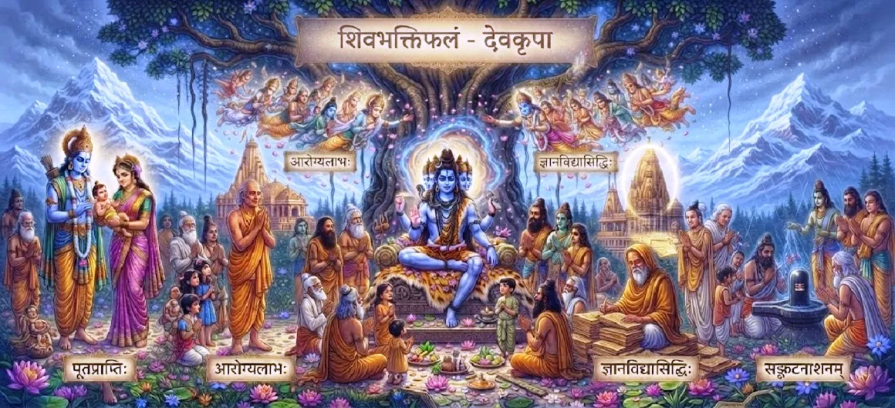

The Fruits of Shiva Bhakti
The thirty-first chapter of the Kotirudra Samhita illuminates the profound spiritual rewards, inner transformation, and ultimate liberation attained through pure devotion (bhakti) to Lord Shiva.
Building upon the foundation of sacred vows and disciplined worship, this chapter reveals how unwavering love for Mahadeva transforms human consciousness and grants immortal bliss.
It stands as a sublime testament to the boundless grace bestowed upon true devotees.
Chapter 31 Highlights
Supreme Bhakti
The extraordinary power of unshakeable devotion to Shiva.
Inner Peace
Experiencing tranquil equilibrium amidst worldly storms.
Ego Dissolution
Melting the illusory self in the ocean of divine grace.
Fearlessness
Conquering the dread of death and existential sorrow.
Divine Grace
Receiving direct protection and blessings from Mahadeva.
Ultimate Moksha
Merging eternally into the supreme light of Kailasa.
Core Topics in This Chapter
- 01The True Nature of Shiva Bhakti→
- 02Transformation of Human Consciousness→
- 03Destruction of Fear and Death (Mrityunjaya)→
- 04Dissolution of Ego and Pride→
- 05The Bliss of Inner Realization→
- 06Divine Protection of Sincere Devotees→
- 07Transcending Karmic Bondage→
- 08Attaining the Abode of Kailasa→
- 09Ultimate Liberation (Moksha)→
- 10Transition to Chapter 32→
The True Nature of Shiva Bhakti
Shiva bhakti is defined not merely as ritual performance, but as an unshakeable, loving attachment of the heart to the Supreme Lord Mahadeva, surpassing all worldly desires.
It is the natural attraction of the soul toward its divine origin.
Transformation of Human Consciousness
As devotion deepens, the devotee's mind undergoes a profound alchemy. Restless desires subside, replaced by a radiant clarity and deep absorption in divine peace.
The ordinary ego gives way to divine awareness.
Destruction of Fear and Death (Mrityunjaya)
One of the greatest fruits of Shiva bhakti is the total eradication of the fear of death, as the devotee realizes their immortal identity as spirit rather than perishable matter.
Shiva as Mrityunjaya liberates His followers from mortality.
Dissolution of Ego and Pride
True devotion dissolves the false sense of 'I' and 'mine'. The devotee learns to see Lord Shiva in all beings, replacing arrogance with profound humility and universal love.
Humility becomes the hallmark of the realized soul.
The Bliss of Inner Realization
Devotees immersed in Shiva bhakti experience an unexplainable internal joy that outshines all external sensory pleasures, remaining steady through life's dualities of joy and sorrow.
This inner joy is the reflection of divine bliss.
Divine Protection of Sincere Devotees
Lord Shiva fiercely protects His sincere devotees from existential hazards, negative forces, and untimely calamities, acting as an unyielding shield around them.
No harm can touch one sheltered by Mahadeva.
Transcending Karmic Bondage
The purifying fire of devotion burns away accumulated past karma and stops the generation of new karmic seeds, freeing the soul from the endless wheel of rebirths.
Grace supersedes the rigid laws of cause and effect.
Attaining the Abode of Kailasa
Upon the dropping of the physical body, advanced devotees of Shiva are elevated to the celestial realm of Kailasa, residing in eternal proximity to the Lord of the Universe.
Kailasa is the ultimate destination of peace.
Ultimate Liberation (Moksha)
The ultimate fruit of Shiva bhakti is moksha—complete dissolution of individuality into the infinite, undivided consciousness of Brahman, realizing "Shivoham" (I am Shiva).
The drop merges into the ocean and becomes the ocean.
Transition to Chapter 32
Having unveiled the glorious spiritual fruits of pure devotion, the narrative prepares to explore the sacred origin and supreme glory of Sri Rameshvara.
Readers are invited to continue to Chapter 32, The Glory of Rameshvara.
Key Teachings of Chapter 31
Supreme Love
Devotion to Shiva is the highest spiritual attainment.
Consciousness Shift
Restless ego transforms into radiant inner peace.
Fear Eradication
Realization of immortality conquers death.
Divine Shield
Mahadeva fiercely protects his devoted children.
Karmic Freedom
Grace burns away past karma and stops rebirth.
Eternal Moksha
Devotees merge eternally into supreme consciousness.
Spiritual Reflection
The fruits of Shiva bhakti described in this chapter transcend mere material gains or temporary pleasures. They represent the ultimate evolutionary triumph of the human soul—moving from the darkness of ignorance and ego into the dazzling light of divine realization. When love for Lord Shiva takes root in the heart, fear dissolves, sorrows lose their sting, and life becomes a flowing expression of grace. This chapter serves as a profound reminder that true devotion is its own greatest reward, ultimately carrying the seeker across the ocean of samsara into the arms of eternal liberation.
Living the Message of Chapter 31
Cultivate pure bhakti by dedicating all your daily actions, thoughts, and challenges as an offering to Lord Shiva.
Let go of egoistic pride, meet life's dualities with inner equanimity, and trust completely in the protective grace of Mahadeva.
Remember that every step taken in devotion brings you closer to ultimate freedom and eternal peace.
Key Spiritual Concepts
Pure, unshakeable love and devotion directed toward Lord Shiva.
The conqueror of death granting fearlessness to devotees.
The melting of the illusory individual ego into divine awareness.
Eradication of past karma through the fire of divine devotion.
The celestial realm of eternal peace and proximity to Shiva.
The ultimate awakening of oneness with Supreme Consciousness.
Chapter Summary
Kotirudra Samhita Chapter 31 celebrates the glorious and boundless fruits of Shiva bhakti. It details how pure devotion transforms human consciousness, destroys the fear of death, dissolves ego, grants divine protection, and leads the soul to ultimate liberation and eternal union with Mahadeva. By highlighting these sublime rewards, the chapter prepares the reader for Chapter 32, which explores the sacred glory of Rameshvara.
Frequently Asked Questions
1. What is the central theme of Kotirudra Samhita Chapter 31?
Chapter 31 focuses on the profound spiritual rewards, inner transformation, and ultimate liberation (moksha) attained through pure devotion (bhakti) to Lord Shiva.
2. How does Chapter 31 connect with the previous chapter?
While Chapter 30 established the sacred vows and disciplines of worship, Chapter 31 reveals the glorious fruits and divine blessings that blossom from practicing those disciplines.
3. What are the primary fruits of Shiva Bhakti?
Fruits include inner peace, destruction of ego, removal of fear of death, divine protection, and absolute union with Lord Shiva.
4. Is Shiva Bhakti accessible to everyone?
Yes, true devotion transcends caste, creed, and status, making Lord Shiva's grace equally available to all sincere souls.
5. What narrative follows this chapter?
The narrative transitions to Chapter 32, 'The Glory of Rameshvara'.
6. What is the ultimate destination of a true Shiva devotee?
The ultimate destination is Kailasa, merging eternally into the supreme consciousness of Mahadeva.
“Through pure devotion to Shiva, all sorrows vanish, fear is conquered, and the soul attains immortal liberation in the supreme light.”
Continue Through Kotirudra Samhita
Chapter 31 explores the fruits of Shiva bhakti. Continue to Chapter 32, The Glory of Rameshvara.